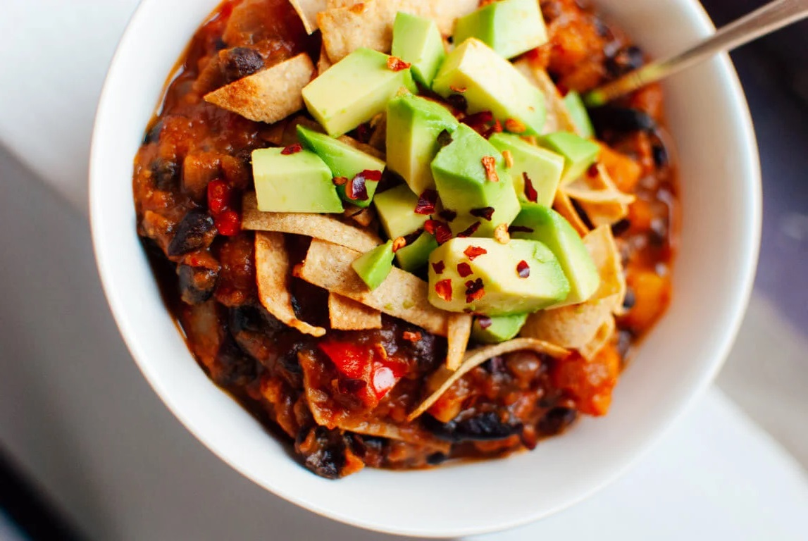

Butternut Squash
Ingredients:
- 1 medium red onion, chopped
- 2 red bell peppers, chopped
- 1 small butternut squash (1 ½ pounds or less), peeled and chopped into ½-inch cubes
- 4 garlic cloves, pressed or minced
- ½+ tablespoon chopped chipotle pepper in adobo
- 1 teaspoon ground cumin
- ¼ teaspoon ground cinnamon
- 2 cans black beans, rinsed and drained, or 3 cups cooked black beans
- 1 small can (14 ounces) diced tomatoes, including the liquid
- 2 cups vegetable broth
- 2 Avocados from Mexico, diced
- 3 corn tortillas for crispy tortilla strips
Instructions:
- In a 4- to 6-quart Dutch oven or stockpot over medium heat, warm
the olive oil until shimmering. Add the onion, bell pepper and
butternut squash and cook, stirring occasionally, until the onions
are turning translucent.
- Turn the heat down to medium-low and add the garlic, chili
powder, ½ tablespoon chopped chipotle peppers, cumin and cinnamon.
Cook, stirring constantly, until fragrant, about 30 seconds. Add
the bay leaf, black beans, tomatoes and their juices and broth.
Stir to combine and cover for about 1 hour, stirring occasionally.
Taste about halfway through cooking and add more chopped chipotle
peppers if you’d like.
- You’ll know your chili is done when the butternut squash is nice
and tender and the liquid has reduced a bit, producing the hearty
chili consistency we all know and love. Remove the bay leaf and
add salt to taste.
- To make the crispy tortilla strips: stack the corn tortillas and
slice them into thin little strips, about 2 inches long by ¼ inch
wide. Warm a drizzle of olive oil in a medium pan over medium heat
until shimmering. Toss in the tortilla slices, sprinkle with salt
and stir. Cook until the strips are crispy and turning golden,
stirring occasionally, about 4 to 7 minutes. Remove tortilla strips
from skillet and drain on a plate covered with a piece of paper towel.
- Serve the chili in individual bowls, topped with crispy tortilla
strips and plenty of diced avocado. I added a little sprinkle of
red pepper flakes (optional). Cilantro would be nice as well. You
might want to serve this along with some chipotle hot sauce
(Tobasco makes one) for the spice addicts like myself.
